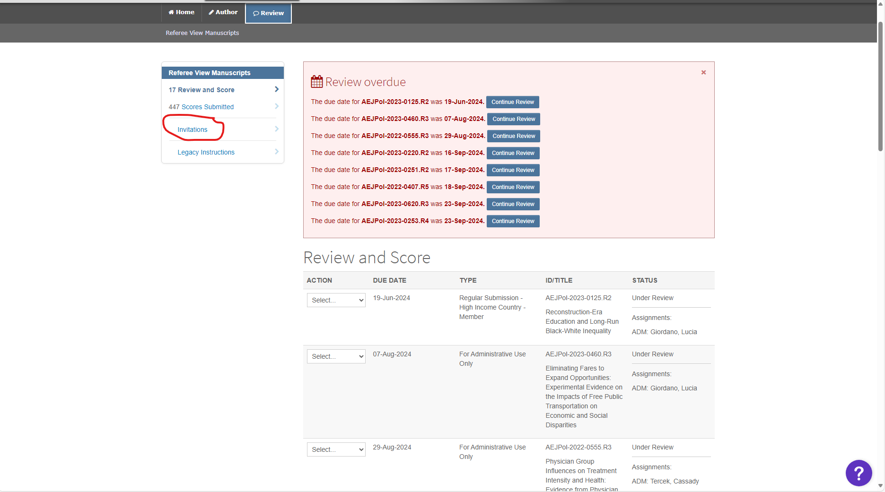

Checking Unassigned Jira Tickets#
Setup#
Basic Instructions#
Go to the unassigned filter in Jira
Easy way: click on this link
Longer way:
Dashboards>Admin Dashboard>AEA tasks by Assigneesection > scroll down to “Unassigned”.
Click on the
Keyfor a case to start the process.The Jira issue should have two documents attached:
The manuscript (“PDF_Proof.pdf”)f
The DCAF (should never be missing…)
If the manuscript is missing…
Make a note of the
Manuscript Central Identifier(copy it to your clipboard).Click on the
Other linkstabClick on the
MCEntryURLlinkEnter the ScholarOne/Manuscript Central login details provided to you.
Click “Review” and search for the Manuscript Number (Ctrl+F/Command-F).
Once you find the manuscript, go to the Action section, “View Proof”, and download the PDF of the manuscript.

Attach the PDF to the Jira ticket.
If the ‘MC Status’ field is RR (“Invitation to Rreview”)…
Go to the MCEntryURL field in the “Other Links” section
Log in to ScholarOne and click Review.

Navigate to the link that says “Invitations”

Search for the manuscript number (Ctrl+F/Command-F).
Click “Agreed and begin review”
Then close out the tab.
Open up the DCAF (you can do this within Jira, without downloading).
In the most recent cases, fill out the following info from the DCAF attached:
Fill out the
openICPSR Project Number- this should be JUST the pure number part, notopenicpsr-123456!If a different DOI is there (does not include
10.3886), copy the full DOI into the fieldReplication package URL!Review the part with “Is any of the data used in this manuscript….”. This will be encoded in the field
DCAF_Access_Restrictions_V2(which is on theDCAFtab in Jira)

if
Yes, data can be made available privatelyis checked:Create a subtask of type
Request additional data, with subjectRequest Restricted Access Data for (AEAREP-NUMBER)
Tag the Assistant Data Editor in the newly created subtask comment.
The Assistant Data Editor will do additional steps
Now you need to open the draft replication deposit (typically, but not always on openICPSR)
Click on the
Replication Package URL, which will open up a separate tab.Find the README in the deposit.
Click on the README (you can preview, probably do not need to download) and scan through to identify the software used
Go to the tab
Repl infoand add the software identified to theSoftware Usedfield.
If there is no README…
If there is no README, alert the Assistant Data Editor, who will create a short report and send this case back to the authors.
Check if the case is a revision:#
Check if the case is a Revision by going to the Other Links tab and clicking the JiraSearchMC. If there are other Jira issues (not subtasks or FYIs), then it is a Revision.

Link the Revision: Go back to the main Task you were editing, click “Link issue” > “Is a Revision of” and then input the AEAREP number of the older task.

Update the MCStatus field to include ‘Revision’ if it doesn’t already have it.
Update the bitbucket short name with the repository name of the previous cases.
Check if the older Jira ticket had restricted access data (i.e. Working location of restricted data was filled out). If yes:
Link Issue, select type “relates to” and add the aearep-xxx for the subtask “Request Restricted Access Data for AEAREP-nnn”
Fill out Working location of restricted data with the same L drive path
Fill out Agreement Signed to match the older Jira ticket
Non-standard unassigned cases#
When you get a Jira ticket titled "Contact form submission (researcher@university.edu, FirstName LastName)", often these are in reference to openICPSR deposit that have already been published. The message is from someone reviewing the deposit and found something concerning, like a missing code file or potential PII.
Review the message in the
Primary Info Section.Using the DOI or article titled provided, search for the Manuscript Identifier.
You can find the article titled on the manuscript attached.
You can find the DOI under the “Other Links” tab.

Fill out the
Journalfield and theManuscript Central Identiferfield.Mark the
MCStatusas Update and fill out theUpdate Type(under Other Links) as the appropriate label, depending on who is contacting us.Tag the Assistant Data Editor in the ticket comments.
The Assistant Data Editor will contact the authors.